generated 2026-09-21 16:51 by tools\gen-image-review.ps1 · one-per-screen worklist: -Pages
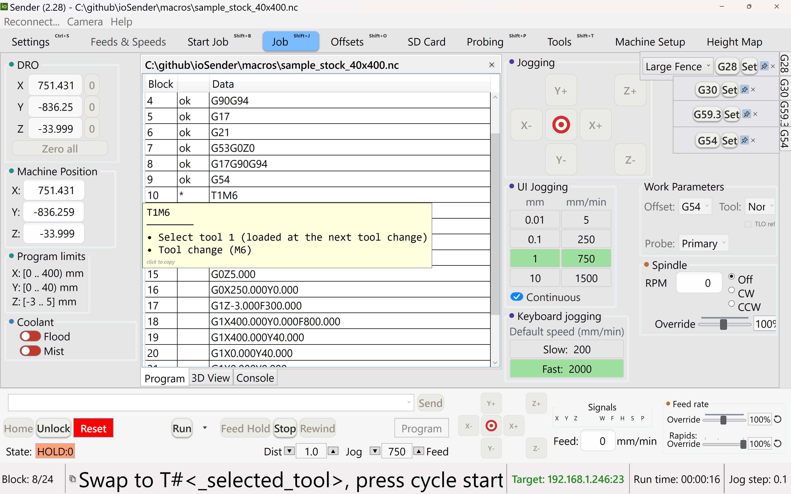
reshoot job-runscreen.png
2026-08-04 01:33
The run strip replaced the run bar, and the bottom status bar is gone (#220) - the largest single visual change in the wave, on the manual's most-visited topic. One shot can also pay off the toolpath outline and Peek, both of which the manual now describes with no figure. Its caption currently admits it is out of date. SHOOT: A job with three tool changes, RUNNING, one outline section expanded - so Feed Hold, Stop and Peek are all on the strip.
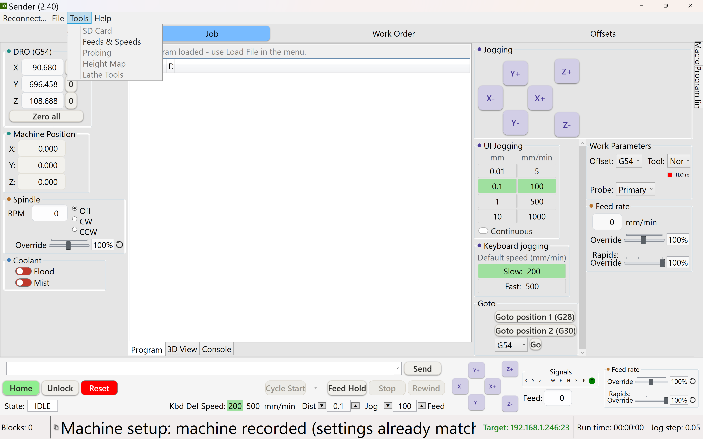
reshoot main-window-tools-menu.png
2026-08-04 01:33
Shows the old four-tab bar and a Tools menu with no Calibration. Caption already admits it. SHOOT: Default config, main window, Tools menu open.
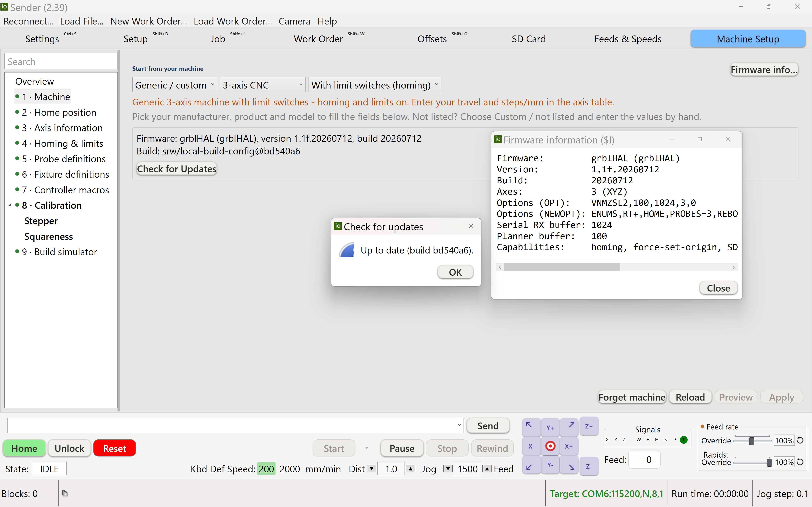
reshoot machine-setup-overview.png
2026-08-04 01:33
Shows NINE steps with Calibration expanded. Machine Setup is eight steps and Calibration left it in #332. Caption already admits it. SHOOT: Machine Setup on STEP 1, not the Overview page - step 1 shows the whole eight-step tree and its status dots.
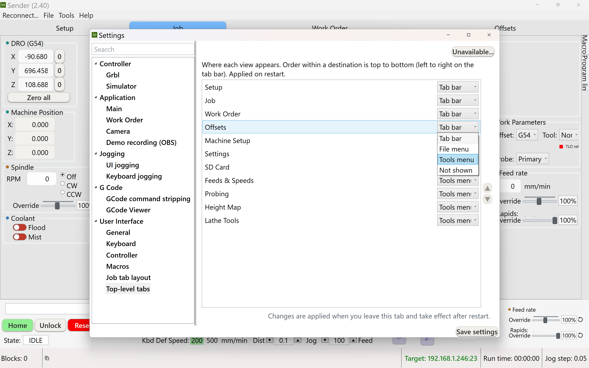
reshoot settings-top-level-tabs.png
2026-08-04 01:33
Its caption describes the pre-#248 four-tab default; #248 restored the full nine-tab bar. Reshooting fixes the figure and the caption together. SHOOT: Settings > User Interface > Top-level tabs, on a default config so the nine-tab default shows.
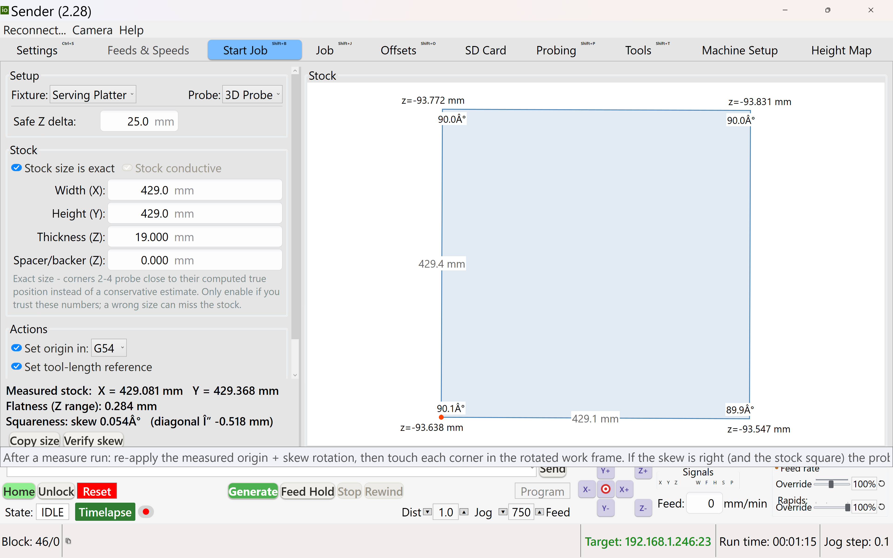
reshoot start-job-panel.png
2026-08-04 01:33
Setup grew a Verify skew / Touch corners / V-bit picker / Scribe square row (#362, #365, #367) - the row that had to be made to wrap. Needed by the Scribe square text anyway. SHOOT: The Setup tab with the actions row visible, including Scribe square.
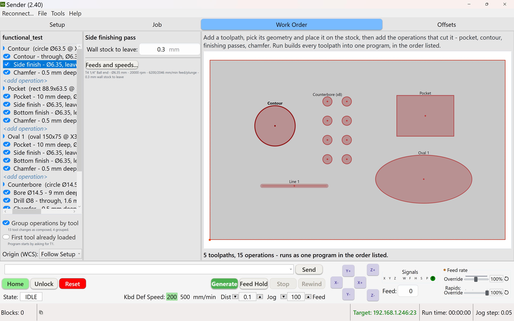
reshoot work-order-composition.png
2026-08-04 01:33
The tree now carries Text, SVG and Indirect geometries plus group headers, and the operations list grew five kinds. SHOOT: A work order whose tree has a Text and an SVG toolpath plus a group header.
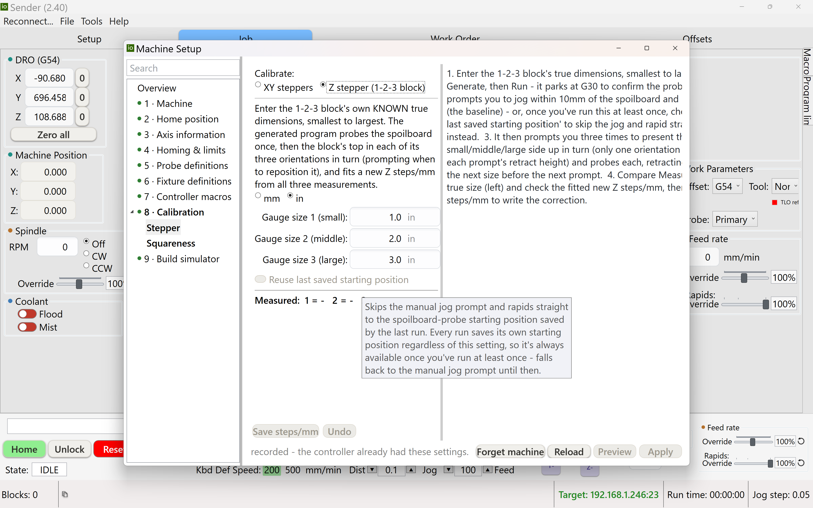
reshoot machine-setup-calibration.png
2026-08-04 01:33
Depicts Calibration as Machine Setup step 8, which it is not (#332). This should become a CALIBRATION VIEW shot instead - retire the filename rather than re-file the same name, and repoint the figure in #machine-setup. SHOOT: Tools > Calibration, Stepper (probe) page, saved under a NEW name.
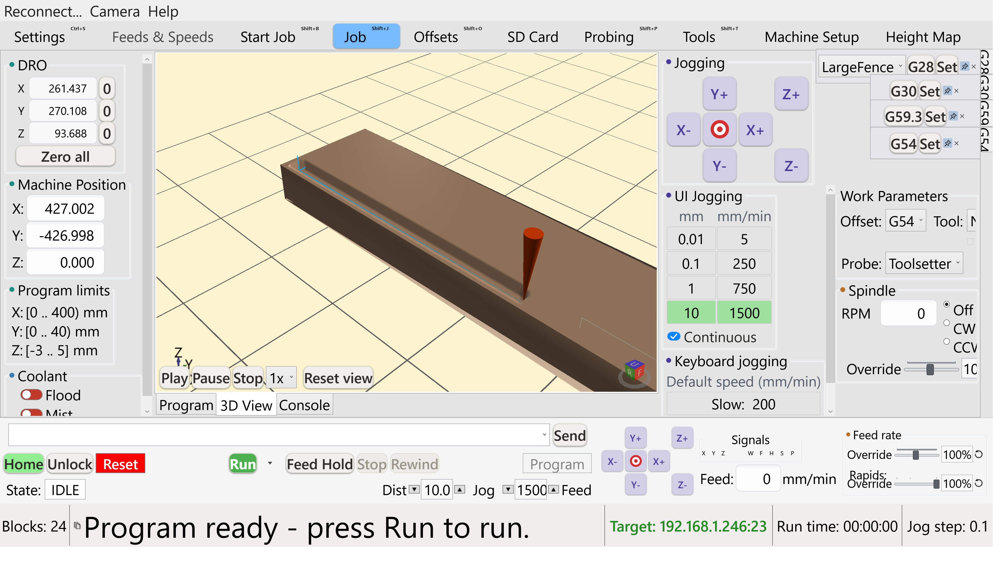
reshoot gcode-viewer.png
2026-07-29 10:05
Shows the OLD RENDERER: a Reset view button on the toolbar, the machine-envelope wireframe box, and none of what the topic now describes. The whole topic was rewritten around the carve view, so this figure contradicts every paragraph under it. Its caption admits it. SHOOT: Job tab, 3D view, a file loaded (macros/sample_stock_40x400.nc) and PLAY run partway so the carve trail shows - framed to include the View options button, the bed grid, the P and TS signs on the bed, and the green dot at machine zero.
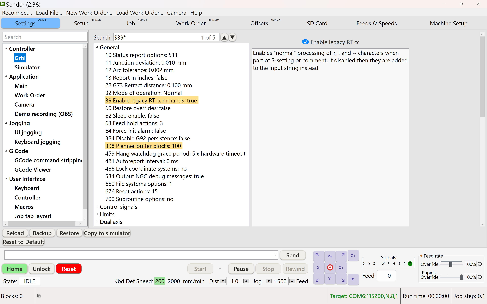
reshoot settings-grbl.png
2026-08-04 01:33
The navigation tree gained a Remote node between Keyboard and Controller, and the G Code category LOST its GCode Viewer page (#360a8976). This is the manual's only picture of the tree, so both changes are invisible until it is reshot. SHOOT: Settings with the tree fully expanded enough to show User Interface > Keyboard / Remote / Controller and G Code with its single page, Grbl selected on the right as now.
shot needed
wanted calibration-tabs.png
The Calibration view's four sub-tabs: Stepper (probe), Stepper (scratch), Squareness (pins), Squareness (probe). SHOOT: Tools > Calibration, framed so all four sub-tabs are readable.
shot needed
wanted carving-negative.png
The same artwork with Negative on, so the badge stands proud of a cleared floor. The depth model is the hard part of #carving to picture; this is the shot that does it. SHOOT: The same SVG toolpath with Negative ticked, preview showing the raised badge.
shot needed
wanted carving-svg.png
An SVG carve in the Work Order tree with the stock preview. #carving shipped with NO figure at all - the only topic in the manual in that state, so this one is owed rather than speculative. SHOOT: Work Order with an SVG artwork toolpath selected and the stock preview showing.
shot needed
wanted dro-offset-menu.png
The DRO title is a dropdown of the work offsets now, and nothing in the manual shows it. The hover tooltip is half the feature - it is what lets you choose between two offsets without selecting one to read it. SHOOT: Click the DRO (G54) title so the menu opens, then hover an entry so its X/Y/Z and R tooltip is captured with it.
shot needed
wanted heightmap-surface.png
Height Map's Surface Map pane with its legend. Replaces the deleted heightmap.png, which showed the pre-rebuild panel. SHOOT: Height Map, Surface Map pane, with a probed map loaded so the legend has numbers.
shot needed
wanted jog-goto-menu.png
The jog pad's Go to button and its menu. Wants a config with real targets - at least one positioned fixture plus G30 and G59.3 - so the grouping and separators are visible rather than a one-line menu. SHOOT: Open Go to from the jog pad and hover an entry, so the machine-coordinate tooltip and the "Z is NOT driven to" wording are both in frame.
shot needed
wanted laser-dialog.png
The SVG laser dialog's three tabs. #laser describes controls no figure shows. SHOOT: Open the SVG laser dialog (needs -enableSVGLaserJob) and frame all three tabs.
shot needed
wanted machine-setup-probes.png
Machine Setup step 5 is now a three-question interview and has no figure at all. The old step-5 screen it replaced was never shot either. SHOOT: Step 5 whole - the probe list, the tool-length dropdown with its $65 line visible underneath, and the reference positions showing captured values (so the computed search-distance line reads as a real number, not the fixed-90 mm fallback).
shot needed
wanted probe-definition.png
The probe edit dialog gained the Plate type radios and their note - the one thing in step 5 that is hard to describe without a picture, since the choice changes which fields exist. SHOOT: Edit a touch plate. Corner (two lips) selected, so the note about turning it upside down shows AND Lip width is present.
shot needed
wanted probe-motion-params.png
Motion parameters lost Travel speed entirely, and hides Edge standoff and Drop to side for a flat plate. The absence is the point, so it needs a FLAT plate to show it. SHOOT: Edit a plate declared Flat (Z only), then Edit motion params - framed so the whole (shorter) field list is visible.
shot needed
wanted settings-keyboard.png
Settings' Keyboard page has never had a figure, and it just gained the paragraph explaining that a bound shortcut in that panel FINDS itself instead of firing. SHOOT: Settings > User Interface > Keyboard - the help block at the top including the find-by-key line, with the grouped tree below it and a group or two expanded.
shot needed
wanted settings-remote.png
The lead figure for #remote, which currently has none. Wants a BOUND remote so the status line reads "Bound to ... - the button you pressed is the primary one" rather than "Waiting"; a page shot with the status line still armed teaches the wrong thing. SHOOT: Settings > User Interface > Remote, whole page - enable tick, bound status line, Rebind, swap tick, and all six function rows with their dropdowns.
shot needed
wanted work-order-drawing.png
A Save Drawing PDF page - the dimensioned sheet a work order produces (M8). SHOOT: Save Drawing from a work order, then shoot a page of the PDF.
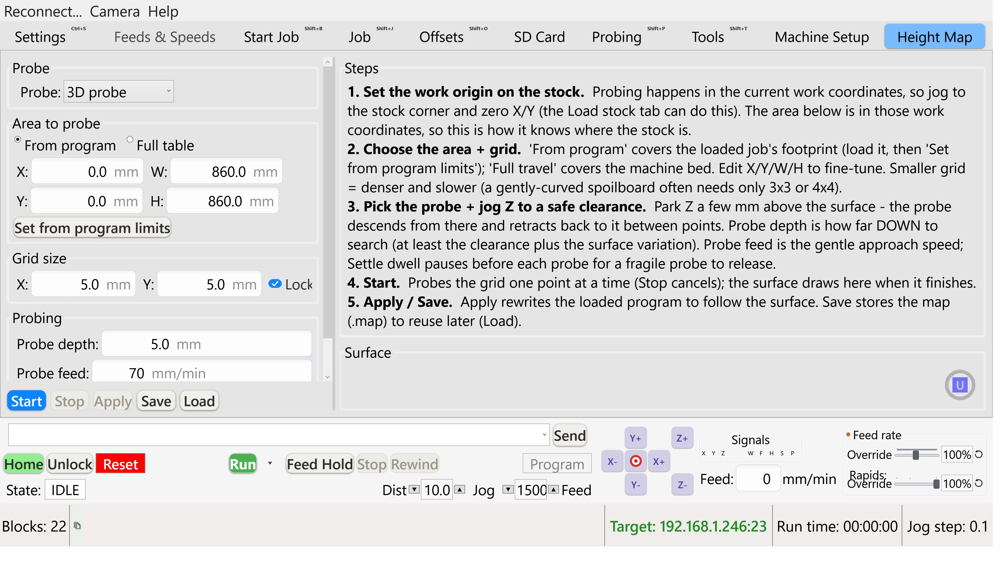
orphaned heightmap.png
2026-07-29 10:05
CHECKED 2026-09-17 and safe to DELETE: it predates the Height Map rebuild (old tab bar, run bar with Rewind, bottom status bar, a Full table radio, probe depth/feed on the panel, a single Surface pane). The new #heightmap topic wants heightmap-surface.png instead.
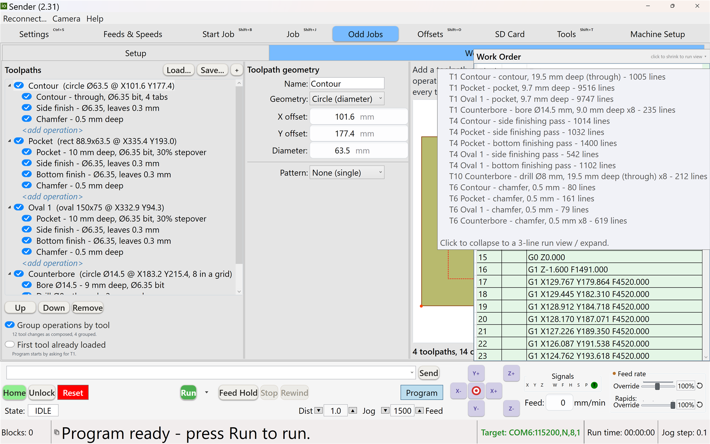
orphaned odd-jobs-work-order.png
2026-08-04 01:33
Depicts the retired Odd Jobs arrangement. DELETE.
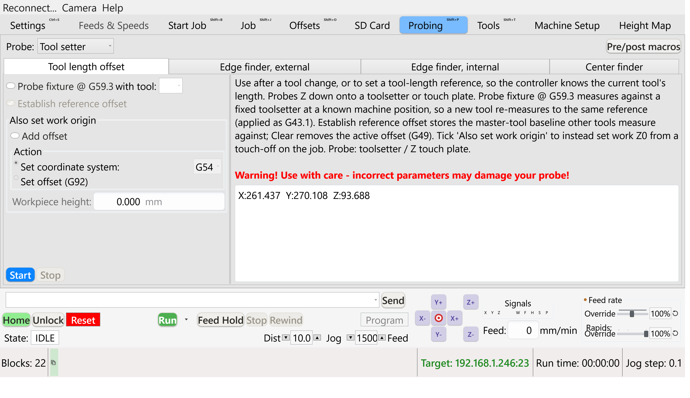
orphaned probing-tabs.png
2026-07-29 10:05
Depicts the Probing tab as it was before Setup absorbed it. DELETE.
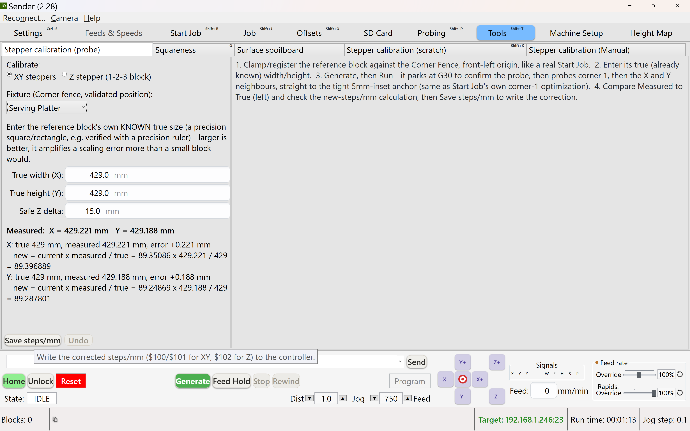
orphaned tools-tab.png
2026-07-29 10:05
Depicts the retired Tools tab wrapper. DELETE.
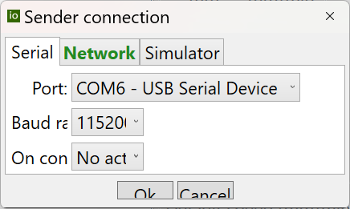
current connect-dialog.png
2026-07-29 10:05
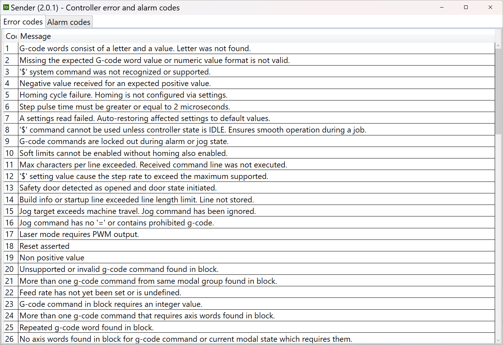
current errors-dialog.png
2026-07-29 10:05
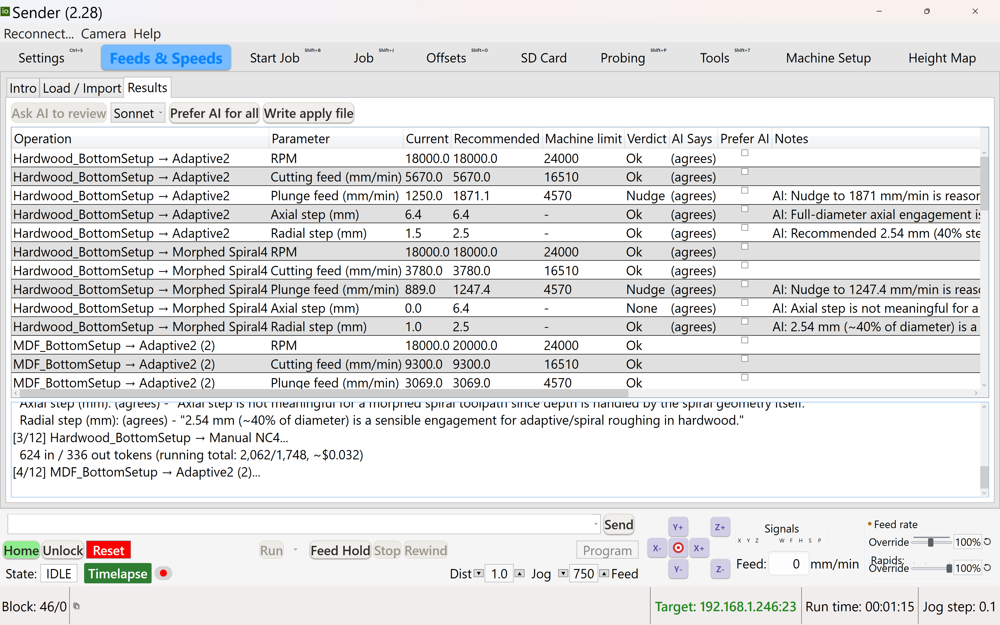
current feeds-and-speeds.png
2026-07-29 10:05
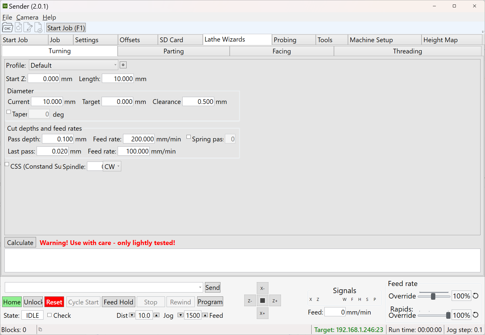
current lathe-wizard.png
2026-07-29 10:05
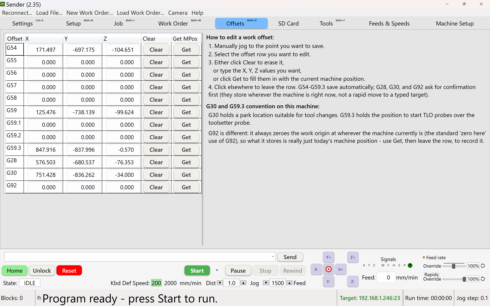
current offsets-table.png
2026-08-04 01:33
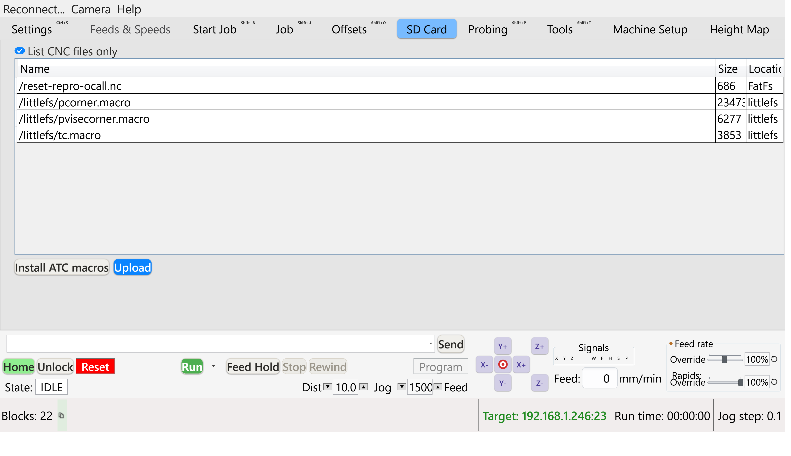
current sdcard.png
2026-08-04 01:33
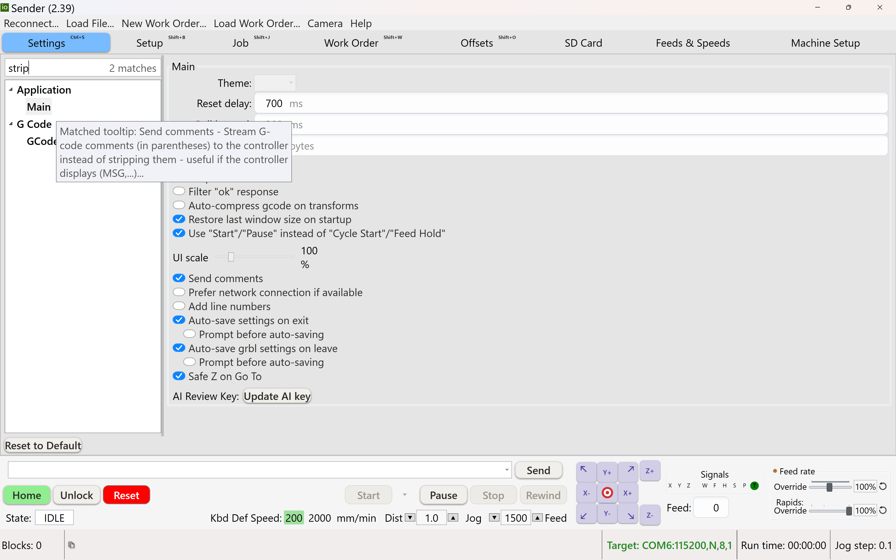
current settings-search.png
2026-08-04 01:33
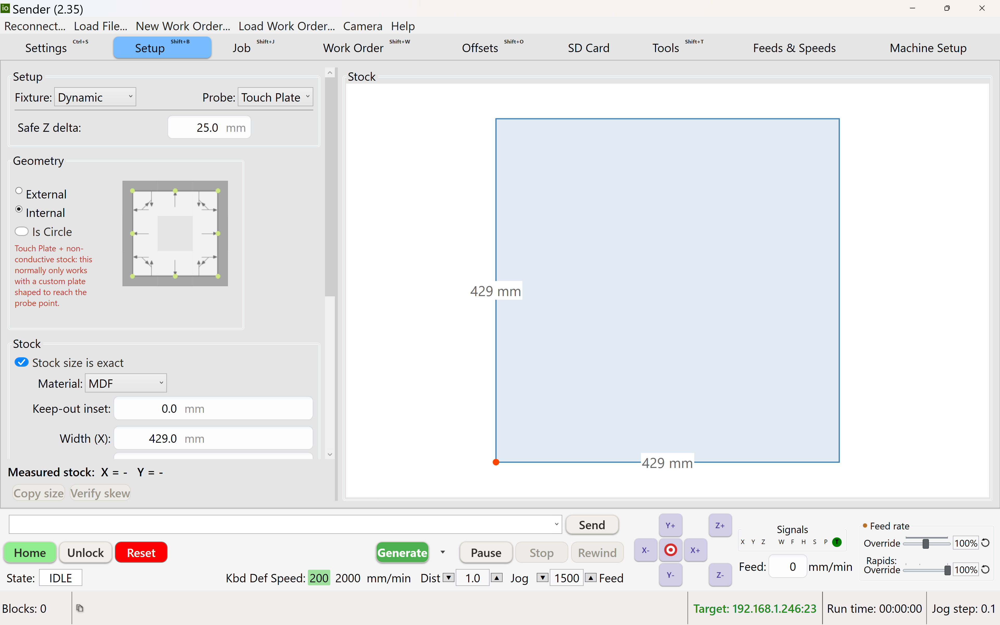
current setup-dynamic-geometry.png
2026-08-04 01:33
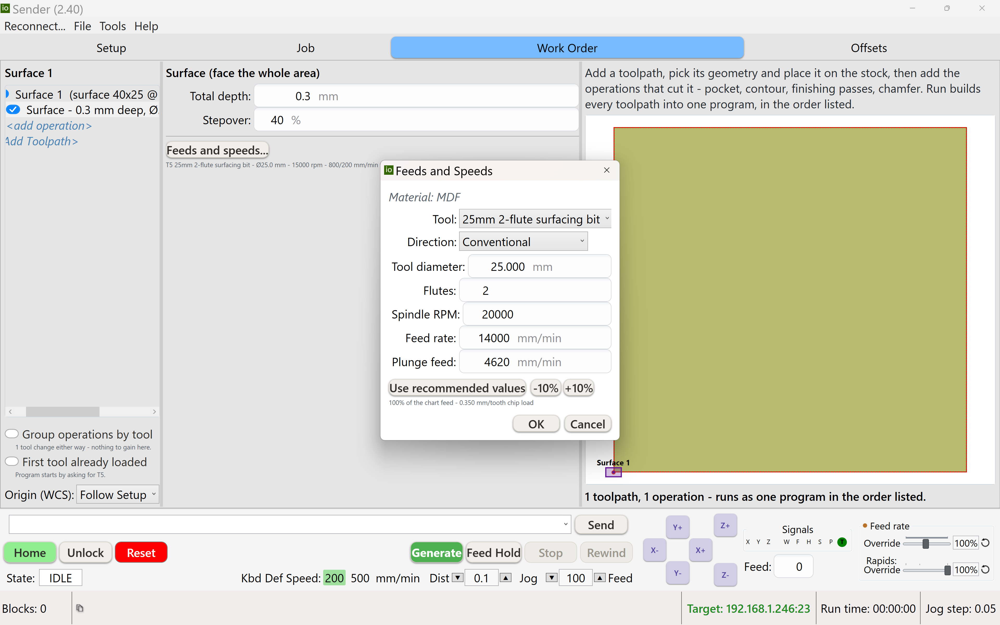
current work-order-surface.png
2026-08-04 01:33
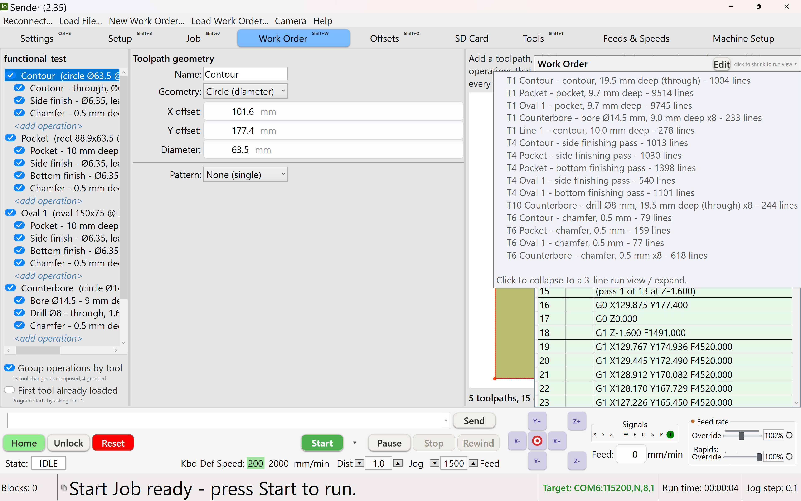
current work-order.png
2026-08-04 01:33